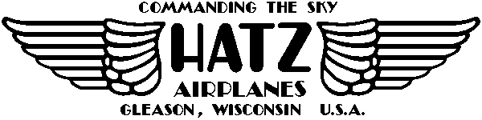

After 20 years of building model aircraft, I have finally decided to take the plunge, and start something a bit larger.
How I chose the Hatz | construction photos
Images of other Hatz Biplanes
The Hatz Web site
Copyright 1998, Thayer Syme. All rights reserved